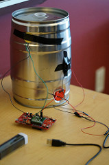
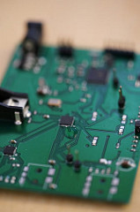
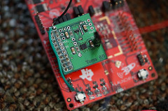
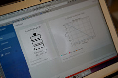

May 12, 2017
 Our team members at the final public demo!
Our team members at the final public demo!
Updates made from the previous week are described below:
■ Signal Processing and Fill Level Classification, Including Machine Learning Exploration - We developed a couple of different ways to do fill level classification during the week, including testing accuracy with the k Nearest Neighbor algorithm using Python's Scikit Learn library. Additionally, we tested further accuracy with the mini keg and our current algorithm using different placements of the transducer and piezoelectric sensor.
■ Web Application Graph Improvements - Our graphs on the main dashboard page were modified.
■ Assembly of 3D Printed Case - The casing for the CC3200 and breakout board was 3D printed and utilized for the duration of our public demo.
May 6, 2017
Here are some images from the private demo:
 The overall system with the container, transducer, and piezo sensor
 Detached version of the PCB design inspired by the LaunchPad
 Image of the TI CC3200 and custom breakout board
 View of the main dashboard of our front-end web application
Photo Credits go to our TA, Artur!
Updates made from the previous week are described below:
■ PCB Assembly and Installation - The custom PCBs were assembled. Due to a short in the major board, we ended up using the breakout board in conjunction with our CC3200 to make it easier to connect the transducer and piezoelectric sensor.
■ Signal Processing and Fill Level Classification - We continued developing a comprehensive testing suite that was able to determine the accuracy of our algorithm while proceeding to connect our backend Python scripts to the remainder of the pipeline.
■ Front-End Web Application Graphs and Notification Feature - Now that the front-end was able to read classifications and fill levels over time, we were able to incorporate a couple of additional features to improve our user experience, such as showing a graph of container fill levels over time and showing a container fill level history with timestamps.
■ CC3200 Platform Development - The CC3200 is able to send packets to the backend Node server, which proceeds to do the signal processing calculations necessary to do fill level classification.
■ Casing Development - We developed a casing to enclose the CC3200 and breakout board, which was 3D printed for the public demo.